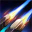

Thông tin tướng: Lucian |
||
|
|
|
|
|
(Nội tại)  |
Sau khi sử dụng một kĩ năng, đòn đánh thường tiếp theo trong vòng 3 giây sẽ bắn ra 2 phát đạn, gây
đầy đủ
hiệu ứng trên đòn đánh. |
|
|
(Kĩ năng Q) |
Tầm sử dụng: 500 KÍCH HOẠT: Lucian khóa mục tiêu, sau đó bắn ra một tia sáng xuyên thấu qua mục tiêu đó, gây sát thương vật lí lên tất cả kẻ địch trên đường thẳng. |
|
|
(Kĩ năng W) |
Tầm sử dụng: 1000 KÍCH HOẠT: Lucian bắn ra một viên đạn, thứ sẽ phát nổ khi tiếp xúc với kẻ địch hoặc bay hết
tầm tối
đa. Vụ nổ gây sát thương phép và khắc dấu ấn lên kẻ địch trong 6 giây. |
|
|
(Kĩ năng E) |
Tầm sử dụng: 425 KÍCH HOẠT: Lucian lướt đi một đoạn ngắn theo hướng chỉ định. |
|
|
(Kĩ năng R) |
Tầm sử dụng: 1400 KÍCH HOẠT: Lucian bắn liên tục các phát đạn từ 2 khẩu súng của mình về hướng chỉ định trong 3
giây,
gây sát thương vật lí lên kẻ địch đầu tiên trúng phải. Thanh Trừng gây gấp 4 lần sát thương
lên lính
và quái. |
|